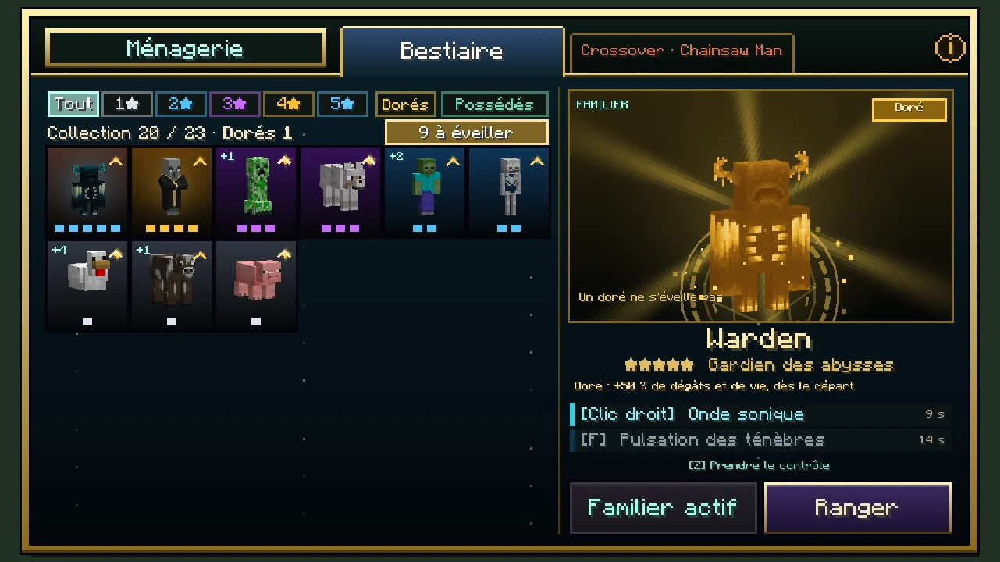
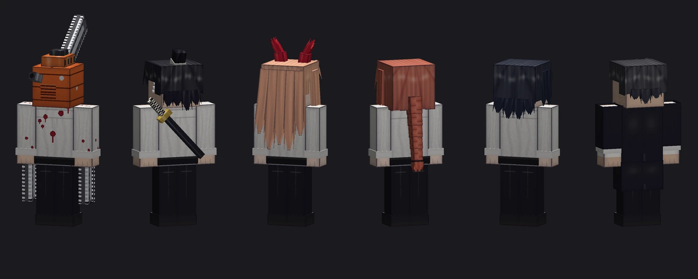
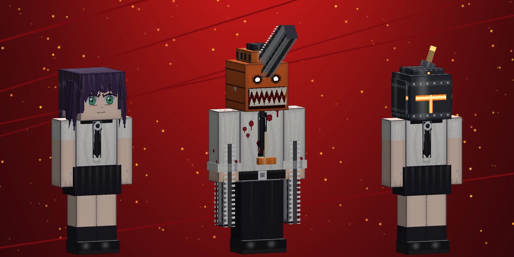
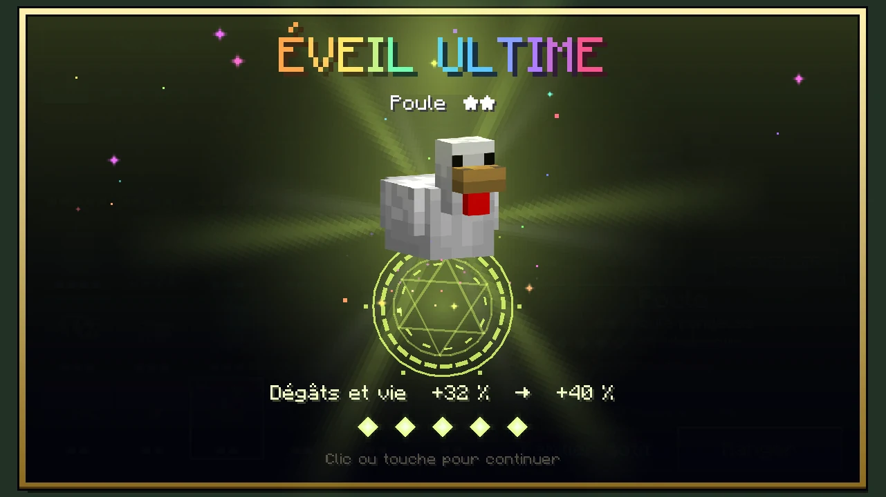
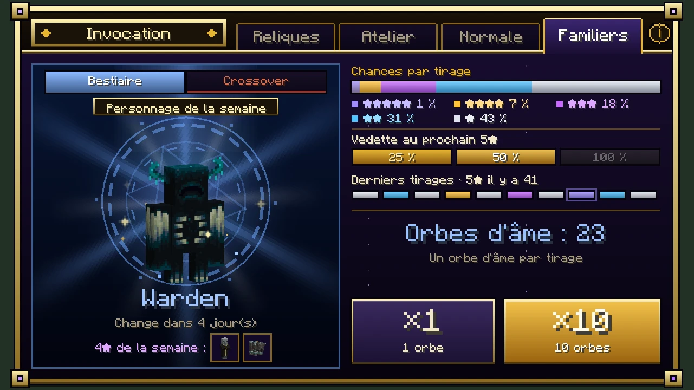
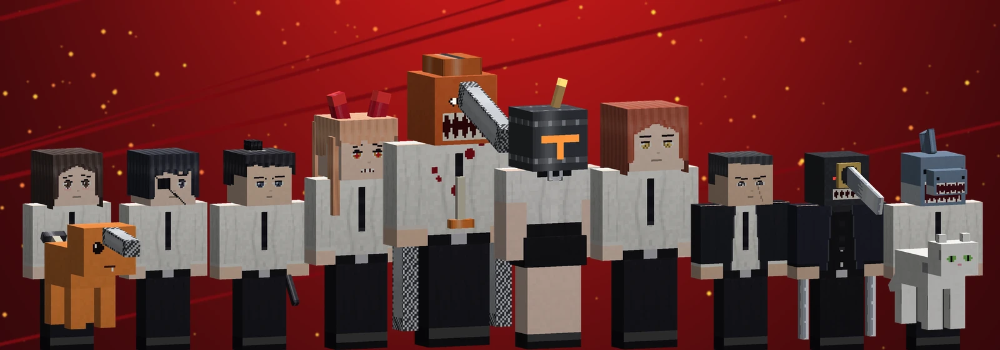
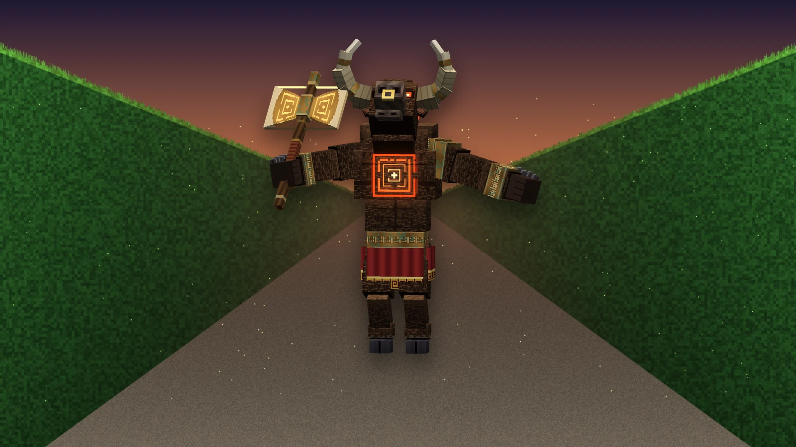

Téléchargements
Releases
Toutes les versions d'Ebisu, la plus récente en premier, avec ce qui a changé à chaque fois. Les bêtas mènent à la 1.0.0.
Dernière version : 0.25.2-beta
Publiée le 23 octobre 2026
- Minecraft 26.3
- Fabric Loader 0.19.5+
- Fabric API
- Java 25
Version bêta : sauvegardez vos mondes avant de l'installer. Un souci, une idée ? Envoyez un ticket.
Installer Ebisu
4 étapes
- Fabric Loader pour Minecraft 26.3 : l'installateur Fabric (nouvelle fenêtre).
- Fabric API, dans le dossier
mods: Fabric API sur Modrinth (nouvelle fenêtre). - Le .jar d'Ebisu, dans le même dossier
mods(%appdata%\.minecraft\modssous Windows). - Lancez le jeu avec le profil Fabric. Le Codex s'ouvre en jeu avec la touche K.
Patch notes
Version 0.25.2-beta

0.25.2-betaBêta- Une page de la Chronique en double reste dans votre sac, sans rien en échange
- Le bouton « à éveiller » de la Ménagerie est lisible, activé ou non
Changements 1
- Les doublons de la ChroniqueUne page que vous connaissez déjà s'affiche à nouveau quand vous la lisez, puis reste dans votre inventaire. Elle ne s'effrite plus en encre et ne donne plus de fragments.
Corrections 1
- MénagerieUne fois cliqué, le bouton « N à éveiller » cachait son texte, et le texte dépassait un peu du bouton. Il est plus grand, son texte reste à l'intérieur, et activé il passe en doré foncé avec le texte en blanc. Les filtres Dorés et Possédés en profitent aussi.
Version 0.25.1-beta
 0.25.1-betaBêta
0.25.1-betaBêta- Une page de la Chronique dans chaque coffre de merveille, à coup sûr
Changements 1
- Les pages de la ChroniqueChaque coffre de merveille, grand ou petit, en contient maintenant exactement une (au lieu d'une chance sur quatre). La page reste tirée au hasard parmi les vingt-quatre selon sa rareté, et une page déjà lue s'effrite toujours en encre.
Version 0.25.0-beta
 0.25.0-betaBêta
0.25.0-betaBêta- Les créatures du mod jouent enfin leurs propres gestes en familier : le Revenant de l'Astrelume, le Tyran, Astérion, le Cyclope, Cerbère et une vingtaine d'autres
- Une caméra par-dessus l'épaule : le viseur n'est plus sur la créature mais sur ce qui est devant elle
Corrections 13
- Les gestes des créatures du modLeurs coups et leurs sorts étaient des gestes que seul leur esprit lançait, et celui d'un familier est éteint. Ils sont maintenant joués pour lui, sur le jeu de chacun, à chaque coup et à chaque compétence :
- le Revenant de l'Astrelume frappe de son poing de cristal, et tend la chaîne de son cœur pour une compétence ;
- le Tyran de la Tour Infernale fend de sa lame, et fait jaillir l'éruption ;
- le Gardien de l'Éclipse balaie, et ouvre sa couronne ;
- Astérion balaie de sa hache, et frappe le sol ;
- le Géant aux cent bras frappe le sol, et lance son rocher ;
- la Grande Ourse rugit, le Cyclope abat son marteau, Cerbère hurle ;
- l'Archer des cimes bande son arc à chaque tir et appelle la pluie d'étoiles ;
- la Phalène du Vide plonge et répand sa poussière ;
- le Serpent de vif-argent frappe et se dresse, le Paon d'Argus fait la roue, le Sanglier d'Adonis charge ;
- le Léviathan se jette en avant, l'Ombre fonce, le Berger des anneaux tire ses anneaux, la Raie boréale plonge, la Nuée d'orage se charge ;
- le Hérisson se met en boule, le Panda roux se dresse, les oiseaux des prés font la parade. Ce ne sont que des gestes : seule la compétence fait effet. Pendant un geste, la créature que vous dirigez peut toujours bouger et sauter.
- Le Revenant de l'Astrelume familierN'éclate plus de lui-même une fois sous la moitié de sa vie, ce qui blessait tout le monde autour, son maître compris.
Changements 1
- La vue en contrôle passe par-dessus l'épauleLa caméra est relevée au-dessus de la tête de la créature et décalée sur la droite, à la mesure de sa taille. La créature se tient en bas à gauche de l'écran, et le viseur est sur ce que vous visez. La vue ne traverse toujours pas les murs.
Version 0.24.0-beta
0.24.0-betaBêta
- Le saut d'un familier contrôlé est réparé : il n'est plus coupé en plein vol, et la créature ne part plus dans tous les sens ensuite
- Des familiers plus grands, d'autant plus que la créature l'est
- Un filtre Dorés dans la Ménagerie, et des filtres dont on voit enfin s'ils sont allumés
- Tout s'entend : coups, impacts, compétences, prise de contrôle, compétence prête
Corrections 2
- Le saut en contrôleLe serveur renvoyait au jeu sa propre idée de la vitesse de la créature, ce qui coupait le saut en plein élan et faussait les pas suivants. Le jeu qui dirige une créature n'écoute plus que lui-même, et la créature ne garde plus côté serveur l'envie de sauter que son esprit avait avant d'être prise.
- Un squelette familier sans arcNe fait plus planter le serveur quand il tire : il retrouve son arc, et une créature dont le tir propre échoue lance un trait à la place.
Ajouts 14
- Le filtre DorésDans la Ménagerie : il ne montre que les dorés que vous possédez.
- Le son des coups :
- chaque coup fend l'air, plus grave pour une grosse créature, avec un souffle de vent dès 3★ et un tintement dès 4★ ;
- quand il touche, un coup sec, et le craquement d'un critique dès 3★ ;
- un doré y ajoute l'éclat d'un cristal.
- Le son des compétences :
- le sort lâché, puis un accord qui monte, une note par étoile : une seule pour un 1★, l'accord entier pour un 5★ ;
- une fusée dès 3★, la balise et un cristal qui résonne à 4★ ;
- à 5★, le tonnerre et des feux d'artifice qui éclatent puis scintillent ;
- un doré double l'accord de cloches, brise un cristal et finit sur un petit air de victoire.
- Le son des moments :
- un souffle d'âme quand vous entrez dans une créature, le même, plus grave, quand vous revenez dans votre corps ;
- une compétence de nouveau prête tinte, plus aigu pour la seconde ;
- une compétence demandée trop tôt répond d'une note sourde.
Changements 2
- La taille des familiersSuit celle de la créature : un humain ou un personnage crossover arrive à un bloc de haut (au lieu de deux tiers), un Warden, un Golem de fer ou un Ghast un peu plus, et les plus petites créatures, comme le Poisson d'argent ou l'Abeille, grandissent un peu pour qu'on les voie.
- Les filtres de la Ménagerie(Possédés, Dorés, « à éveiller ») se remplissent de leur couleur quand ils sont allumés, et leur clic sonne plus clair à l'allumage qu'à l'extinction.
Version 0.23.0-beta

0.23.0-betaBêta- Le doré passe à +50 % de dégâts et de vie
- Vu de dos : un familier contrôlé se joue en troisième personne, la caméra à la mesure de sa taille
- Des coups et des compétences spectaculaires, sur la créature elle-même et plus du tout sur le HUD, d'autant plus grands que le personnage a d'étoiles
- Les personnages crossover soignés sous tous les angles, de dos compris
- Les touches du mod réunies sous une seule catégorie Ebisu
Ajouts 18
- Les coups se voient sur la créature :
- elle arme, puis se fend en tournant tout le corps dans le coup, une fois d'un côté, une fois de l'autre ;
- un arc de lumière de sa couleur balaie l'air devant elle, et à partir de 4★, des étincelles enchantées en jaillissent.
- Chaque compétence est un petit spectacleDe plus en plus grand avec les étoiles :
- la créature se ramasse, jaillit vers le haut, étirée, et retombe avec un rebond ;
- une hélice de lumière de sa couleur monte autour d'elle, et des anneaux s'ouvrent au sol ;
- dès 3★, un éclair et une gerbe de lumière ;
- à 4★, des traînées lumineuses, des étincelles électriques, un son de balise et un quart de tour ;
- à 5★, une tour de lumière, une onde de choc, des feux d'artifice, le tonnerre et une pirouette complète ;
- un doré y ajoute une pluie de paillettes d'or.
- En marcheLes créatures roulent des épaules au rythme de leurs pas et se penchent dans leur course.
- Les personnages crossover, de dos et de profil :
- les chemises ont leur col, leur empiècement, un pli dans le dos, les omoplates et les fronces à la taille ;
- les vestes ont leur couture et leur fente dans le dos ;
- les pantalons ont leurs poches arrière et des plis derrière le genou ;
- les cheveux partent en mèches depuis le sommet du crâne et finissent en pointes ;
- Aki, Himeno, Kishibe et le Zombie ont des mèches sur la nuque ;
- la tête de Chainsaw Man a sa grille d'aération, un boulon et son pot d'échappement, qui vibre avec le moteur.
Changements 6
- Doré : +50 %De dégâts et de vie (au lieu de 12 %).
- Contrôle vu de dosPrendre le contrôle passe en vue arrière, la caméra reculée selon la taille de la créature (plus loin pour un Ravageur que pour une poule), et votre vue d'avant revient quand vous rentrez dans votre corps. Un petit viseur de la couleur de la créature reste au centre.
- Plus d'effets sur le HUDL'entaille à l'écran et l'anneau autour du viseur ont disparu, tout se passe sur la créature.
- Le rappel de la touche pour revenir dans votre corpsNe chevauche plus les compétences : il est à droite de la barre.
- Les touchesDu mod et des familiers sont toutes dans une seule catégorie Ebisu, dans Options › Contrôles › Touches.
- Le bouton Ménagerie du menu du jeu est retiréLa Ménagerie s'ouvre avec M.
Version 0.22.0-beta
 0.22.0-betaBêta
0.22.0-betaBêta- Le doré est un personnage à part : l'avoir ne donne pas le personnage normal, il a sa propre carte et il ne s'éveille jamais
- Plus aucun tremblement de la vue aux coups et aux compétences
- S'accroupir avec son familier, et un clic gauche qui se voit enfin
- Fini la descente lente : un familier tombe comme vous
- Des animations bien plus riches pour tous les familiers, vanilla et crossover
Ajouts 27
- L'accroupi(Maj) en contrôle :
- il avance pas à pas et ne tombe pas des bords ;
- la vue baisse comme celle d'un joueur accroupi ;
- les humanoïdes (zombies, squelettes, piglins…) prennent leur vraie posture accroupie, et les personnages crossover se penchent et se baissent ;
- les autres créatures se tassent. Tout le monde le voit.
- Le coup de clic gauche se voit :
- en vue subjective, une entaille de la couleur de la créature balaie l'écran ;
- la créature se fend en avant dans son coup.
- Chaque compétence se voit :
- un anneau de sa couleur s'ouvre autour du viseur ;
- la créature se ramasse et s'élève, étirée.
- Les animations natives des créatures vanilla se déclenchent enfin :
- le coup du Golem de fer, du Ravageur, du Hoglin, du Zoglin, du Warden et du Grinceur, même dans le vide ;
- le rayon sonique du Warden ;
- les bras levés de l'Évocateur ;
- la gueule ouverte du Ghast ;
- la charge tête baissée de la Chèvre.
- Le corps de tous les familiersS'étire dans un saut et s'écrase à l'atterrissage, d'autant plus fort que la chute était haute.
- Les personnages crossover, animés de la tête aux pieds :
- ils respirent au repos ;
- à la marche, les bras balancent contre les jambes et le corps tangue ;
- à la course, ils se penchent ;
- le coup est une vraie frappe armée puis portée, le corps tourné derrière le bras ;
- une compétence lève les deux bras ;
- en l'air, les jambes s'écartent et les bras se lèvent ;
- les cheveux balancent, volent en arrière à la course et se soulèvent dans un saut (les longs cheveux de Power, la tresse de Makima, la queue de cheval de Kobeni…) ;
- les tronçonneuses tournent et vibrent plus fort au combat.
Changements 6
- Le personnage doré est un personnage à part :
- le tirer ne donne pas le personnage normal, et inversement ;
- il a sa propre carte dans la Ménagerie, juste après le normal, et se choisit comme n'importe quel personnage ;
- il est 12 % plus fort dès le départ et ne s'éveille jamais. Les anciennes sauvegardes sont converties : la copie dorée d'un personnage devient son doré, et ses autres copies restent son personnage normal.
- Plus de tremblementDe la vue au clic, aux compétences, aux ruées ni aux atterrissages.
- Plus de descente lenteEn l'air, un familier tombe avec la gravité d'un joueur, quel que soit l'animal (une poule ne plane plus). Les volants montent et descendent tout de suite aux touches.
Version 0.21.0-beta

0.21.0-betaBêta- Un familier pris en main se joue comme votre personnage : même accélération, même élan, même course, vue qui se balance, champ de vision réparé
- Plus de main, de barre d'objets ni d'inventaire pendant le contrôle : à la place, les cœurs, les étoiles et les compétences du familier
- Quatre nouvelles mécaniques de pouvoirs pour le crossover : la Chaîne de Denji, le « Pan ! » de Makima, le Chapelet de bombes de Reze, la Tempête de lames de Katana Man…
- Un bouton Ménagerie dans le menu du jeu, et les créatures ne débordent plus de leurs cases
Ajouts 17
- Nouveaux pouvoirs :
- Chaîne démarreur(Denji) : il lance la chaîne de son démarreur sur l'ennemi visé, s'y hisse d'un coup et le tronçonne à l'arrivée.
- Pan !(Makima) : elle pointe du doigt l'ennemi visé, il brille un instant, puis il est écrasé là où il se trouve, même s'il a fui.
- Malédiction(Aki) : un clou maudit, et deux secondes plus tard la main du Démon Malédiction étreint la cible, où qu'elle soit.
- Fleur explosive(Reze, la fille du café) : une fleur glissée sur l'ennemi, qui éclot en explosion un instant plus tard.
- Chapelet de bombes(Reze, Démon Bombe) : six explosions qui s'enchaînent droit devant, de plus en plus loin.
- Marteau de sang(Power) : la terre se fend en quatre coups qui avancent et projettent tout en l'air.
- Tempête de lames(Katana Man) : quatre lames tournoient autour de lui pendant trois secondes.
- Tronçonnage(Denji) passe à sept coups, et le sang qui gicle le soigne un peu.
- Aide à la viséeLes pouvoirs qui visent un ennemi prennent celui qui est le plus près de votre regard s'il est en vue, même si le viseur n'est pas exactement dessus.
- La barre du familierTrois cases comme la barre d'objets, avec la recharge en voile blanc comme un objet qui refroidit et la case qui s'allume quand vous l'utilisez :
- son coup (épée) ;
- sa première compétence ;
- sa seconde compétence.
- Ses cœursÀ la place des vôtres : dorés pour un familier en or, qui clignotent quand il est touché et tremblent quand il lui reste peu de vie. À droite, ses étoiles et sa vie en chiffres.
- Le lienQui le relie à votre corps, en barre d'expérience : les blocs en vert au milieu, la barre qui rougit près des 96 blocs.
- Un bouton Ménagerie dans le menu du jeu (Échap), qui affiche aussi sa touche.
Changements 8
- Le ressenti du contrôle :
- il accélère et freine comme vous, garde son élan en l'air et peine dans l'eau ;
- il court un tiers plus vite et saute plus loin en courant, avec la poussière aux talons ;
- accroupi, il avance pas à pas ;
- la vue se balance avec ses pas, s'élargit quand il court et tressaille à chaque coup, compétence, ruée ou atterrissage.
- Le champ de vision n'est plus zooméPendant le contrôle. Il était calculé sur la vitesse de votre corps immobile, ce qui le réduisait de moitié.
- Pendant le contrôle, votre main, votre barre d'objets, vos cœurs, votre faim et votre expérience sont masqués. L'inventaire, le lâcher d'objet et le changement d'emplacement ne font plus rien.
- Les créatures des menus (Ménagerie, invocation, révélation) sont cadrées sur leur vrai dessin et non sur leur boîte : les ailes, tentacules, cornes et tronçonneuses ne débordent plus des cases.
Version 0.20.0-beta

0.20.0-betaBêta- Plus de latence quand vous prenez le contrôle d'un familier : il répond aux touches dans l'instant
- L'éveil se choisit : les doublons vont en réserve, et vous éveillez vos familiers vous-même dans la Ménagerie, avec un rite d'éveil en plein écran
- Le familier vous suit comme un chien : il ne tourne plus autour de vous quand vous tournez la tête
- La bannière Chainsaw Man affiche votre collection à la place d'un texte inutile
Ajouts 12
- Le rite d'éveilDans la Ménagerie, le bouton Éveiller dépense un doublon de la réserve.
- La créature monte au centre d'un cercle qui tourne de plus en plus vite, la lumière converge en spirale et ses cinq gemmes d'éveil tournent autour d'elle.
- Le cœur bat de plus en plus vite et l'écran tremble, puis tout éclate en blanc et des ondes de choc partent.
- La nouvelle gemme vole se sertir dans la couronne, et le bonus de dégâts et de vie monte jusqu'à sa nouvelle valeur.
- Le cinquième éveil est l'Éveil ultime, dans toutes les couleurs, sous une pluie d'arc-en-ciel.
- Un clic abrège le rite, un second le ferme.
- Voir ce qui reste à éveiller :
- une carte qui a un éveil à donner porte un chevron doré qui bat ;
- la pastille « *N* à éveiller » filtre la collection sur eux ;
- la scène affiche la réserve du personnage choisi ;
- les gemmes d'éveil en attente battent en pointillé doré.
- Sur une bannière sans vedette, la fenêtre d'invocation montre les étoiles du personnage présenté et une barre Votre collection : N / total.
Changements 8
- Le contrôle à distance ne passe plus par le serveur pour bougerC'est votre jeu qui déplace la créature, comme une monture, et le serveur reçoit sa position. Les ruées, les bonds et les téléportations des compétences suivent le même chemin. Le coup de la créature se voit dès le clic.
- Un doublon n'éveille plus tout seulIl va dans la réserve du personnage. Les éveils déjà obtenus sont conservés. Le tirage d'un doublon affiche maintenant « À ÉVEILLER » et sa réserve.
- Le familier suit comme un chien :
- il vous laisse vous éloigner de quelques blocs ;
- il vous rejoint du côté où il était et s'arrête à deux pas ;
- au repos, il se tourne vers vous ;
- il ne vous colle plus derrière l'épaule et ne tourne plus quand vous tournez la tête.
- Le texte « Pas de personnage de la semaine » a disparu de la bannière Chainsaw Man.
Version 0.19.0-beta

0.19.0-betaBêta- Plus de crash en ouvrant les familiers ou le crossover dans l'invocation ou la Ménagerie
- Un onglet Familiers dans l'invocation, avec un interrupteur Bestiaire / Crossover
- Chainsaw Man reprend les taux par étoile du Bestiaire ; seul le doré (0,1 %) tombe sur n'importe quel personnage
- Les pages Familiers du Codex ne montrent plus que des créatures vanilla
Ajouts 2
- L'onglet FamiliersDans la fenêtre d'invocation, les bannières de personnages ne sont plus mêlées aux bannières de reliques. Elles sont toutes rangées sous un seul onglet, Familiers, et un interrupteur en haut de la bannière choisit entre le Bestiaire (les créatures du jeu et du mod) et le Crossover (Chainsaw Man). S'il y a un jour plusieurs crossovers, appuyer de nouveau sur Crossover passe au suivant. L'onglet rouvre la dernière bannière de familiers regardée.
- Dans la Ménagerie, l'onglet du crossover s'appelle Crossover · Chainsaw Man.
Changements 2
- Chainsaw Man suit les taux par étoile5★ 1 %, 4★ 7 %, 3★ 18 %, 2★ 31 %, 1★ 43 %, comme le Bestiaire. Toujours pas de personnage de la semaine : un tirage tombe sur n'importe quel personnage de ses étoiles. Le seul tirage qui ignore les étoiles est le doré, à 0,1 % : il tombe sur n'importe quel personnage de la bannière.
- Les captures des pages Familiers du Codex sont refaites avec des créatures vanilla (Warden, Wither en or, Évocateur, un tirage ×10 du Bestiaire). Chainsaw Man n'apparaît plus que dans la partie Crossover.
Corrections 3
- Crash« Tried to access entity ID before ID assignment » au clic sur la bannière des familiers ou du crossover : les créatures dessinées dans les menus n'avaient pas d'identifiant.
- Après un tirage de familiers, l'écran de révélation comptait les sceaux au lieu des orbes d'âme : « Encore ×1 » et « Encore ×10 » se grisaient à tort ou s'allumaient sans orbes. Il affiche et vérifie maintenant les orbes d'âme.
- Le bilan d'un ×10 de familiers disait « nouvelle(s) relique(s) » : il dit maintenant « nouveau(x) personnage(s) ».
Version 0.18.0-beta
0.18.0-betaBêta
- Les personnages de Chainsaw Man redessinés de la tête aux pieds, et Reze sans masque rejoint la bannière
- La bannière Chainsaw Man n'a plus de date ni de vedette : ses 14 personnages ont exactement la même chance
- Doré : 0,1 % par tirage, sur n'importe quel personnage de la bannière, crossover compris
- La vedette de chaque bannière est tirée au hasard chaque semaine, jamais la même deux semaines de suite, le Dé du Destin compris
Ajouts 7
- Reze, la fille du café(4★) : Reze sans son masque, en chemisier blanc, ruban noir et ras-de-cou à anneau. Ses compétences : Fleur explosive, une fleur lancée avec un sourire qui éclot en explosion un instant plus tard, et Leçon de natation, un plongeon qui la fait ressortir plus loin, insaisissable un instant. La Reze 5★ reste le Démon Bombe.
- Des personnages Chainsaw Man refaits en entierPeints deux fois plus finement, avec une ombre douce dans les creux et le trait fin du dessin animé autour de chaque volume.
- Des yeux d'animé : cils épais relevés au coin, iris en dégradé, deux reflets ; les pupilles en croix de Power, les anneaux de Makima, les paupières lourdes de Makima et de Kishibe.
- Des cheveux en mèches qui se détachent de la tête et finissent en pointe, avec le reflet en anneau des cheveux d'animé : la frange de chacun, les longs cheveux de Power jusqu'à la taille, la tresse de Makima en cinq segments, le chignon d'Aki, la queue de cheval de Kobeni.
- De vraies tronçonneuses pour Denji : une barre d'acier dans une chaîne dont les dents dépassent de la silhouette, un moteur à ailettes sur le crâne et une mâchoire de crocs qui sort du visage.
- Les cornes de Power en deux segments, le sourire de requin de Power, la cicatrice, la barbe naissante et les piercings de Kishibe, les trois clous d'oreille d'Aki, son sabre dans le dos, la cigarette allumée et le cache-œil d'Himeno, les larmes de Kobeni, le fusible du Démon Bombe.
- Les tenues en relief : cravate détachée de la chemise, poignets, ceinture à boucle, chaussures cirées, veste ouverte à revers, manteau long de Kishibe, jupe plissée de Reze.
Changements 5
- Chainsaw Man devient un crossover permanentPlus de date de fin, plus de vedette, plus de rotation. Chacun des 14 personnages a la même chance à chaque tirage, du chat de Power au Démon Tronçonneuse.
- Doré : 0,1 %Par tirage au lieu de 2 % par personnage. Le tirage doré est décidé avant tout le reste ; le personnage est alors tiré au hasard parmi tous ceux de la bannière, toutes étoiles confondues.
- Vedettes tirées au hasardSur Reliques, l'Atelier et le Bestiaire, la vedette change toujours tous les 7 jours de jeu, mais elle est tirée au hasard parmi toutes les légendaires de la bannière, jamais la même deux semaines de suite. Il n'y a plus d'ordre fixe. Le Dé du Destin (la Table du Destin) peut désormais être la vedette de l'Atelier. Les épiques et les 4★ de la semaine sont tirés de la même façon.
- En français, les compagnons s'appellent maintenant des familiers, dans les menus comme dans le Codex.
- Le Codex a deux parties au lieu d'une : Les familiers (le fonctionnement et le Bestiaire, les créatures du jeu et du mod) et Crossover (Chainsaw Man).
Corrections 2
- Plusieurs textes des menus contenant un « % » s'affichaient « Format error » : la ligne des personnages dorés, l'aide de la Ménagerie et les compétences de soin (Lait frais, Bulle de vie, Potion de soin).
- Le haut du Codex se chevauchait sur les écrans moyens : le lien « Releases » passait sous la recherche. La barre tient maintenant sur une ligne à toutes les largeurs, et se replie en menu sous 1240 pixels.
Version 0.17.0-beta

0.17.0-betaBêta- Les compagnons : une nouvelle sorte de bannière qui invoque des personnages, toutes les créatures de Minecraft et d'Ebisu, de 1 à 5 étoiles, parfois en or
- Votre compagnon vous suit en miniature, et d'une touche vous prenez sa place à distance, à sa vraie taille, avec ses deux compétences
- Événement Chainsaw Man jusqu'au 22 novembre : treize personnages, une bannière à part
- Orbes d'âme : chaque créature vanilla tuée vous laisse un fragment d'âme
Ajouts 10
- Le BestiaireUne bannière permanente de 142 personnages, chaque créature vanilla et chaque créature d'Ebisu, telle qu'elle est (son modèle, ses sons, ses animations). Cinq étoiles pour les boss (Dragon de l'End, Wither, Warden, Doyen des gardiens, le Colosse, Astérion, le Tyran de la Tour…), une étoile pour la basse-cour. Un 5★ en vedette chaque semaine, deux 4★ de la semaine.
- Personnages dorésChaque personnage a 2 % de chances de sortir en or. Il se change en or dans un éclair pendant la révélation, reste doré de la tête aux pieds, scintille de poussière d'or, et frappe 12 % plus fort.
- ÉveilUn doublon éveille le personnage d'un niveau, jusqu'à 5 (+8 % de dégâts et de vie par niveau).
- La Ménagerie(touche
M) : votre collection par bannière, les personnages possédés debout sur leur carte, les autres en ombre ; filtres par étoiles ; le personnage choisi en grand, qui tourne, avec son surnom, son éveil et ses compétences ; choisir son compagnon, le sortir ou le ranger, porter son or. - Le compagnon qui vous suitRéduit à la taille d'un animal, il marche, vole ou nage derrière votre épaule, d'un monde à l'autre. Il ne peut pas être blessé, personne ne l'attaque, il ne casse rien.
- Prendre le contrôle(touche
Z) : vous voyez par ses yeux, à sa vraie taille. Clic gauche son attaque, clic droit sa première compétence,Fla seconde,Ctrlpour courir. Votre corps reste immobile : un coup reçu, ou plus de 96 blocs, et vous y revenez. Un panneau montre sa vie, ses compétences et le lien. - 122 compétencesRafales de feu, onde sonique du Warden, crânes du Wither, souffle du Dragon, crocs de l'Évocateur, pluie de flèches, téléportation de l'Enderman, charge du Ravageur, séisme du Golem de fer… Les attaques de zone ne touchent que ce qui est hostile.
- K.OVaincu pendant que vous le contrôlez, un compagnon s'en va un moment (30 s à 2 min selon ses étoiles) puis revient, jamais perdu.
- Fragments et orbes d'âmeChaque créature vanilla tuée par un joueur laisse un fragment d'âme (pas celles des générateurs de monstres) ; neuf fragments font un orbe d'âme, la monnaie des bannières de personnages. L'orbe est animé, en argent bleuté et cobalt.
- Événement Chainsaw ManDu 21 octobre au 22 novembre 2026 : une bannière temporaire avec Denji (Chainsaw Man), Makima, Reze, Power, Aki, Himeno, Kishibe, Katana Man, Kobeni, Beam, Pochita, Meowy et un zombie. Leurs corps, leurs peaux et leurs 22 compétences sont dessinés pour l'événement ; Denji vous suit sous la forme de Pochita, Reze devient le Démon Bombe quand on la prend en main. 5★ à 1,5 %. Les personnages obtenus restent à vous après l'événement.
Changements 3
- Plus de mélange entre bannièresSur la bannière Reliques, une légendaire est toujours une relique de famille ; sur l'Atelier, toujours une relique de création.
- La fenêtre d'invocation prend les couleurs de chaque bannière de personnages et affiche le compte à rebours d'un événement.
- Le Codex a une nouvelle partie Compagnons : leur fonctionnement, le Bestiaire complet avec chaque compétence, et l'événement Chainsaw Man.
Version 0.16.0-beta
 0.16.0-betaBêta
0.16.0-betaBêta- Les sceaux rééquilibrés : le jeu vise environ 20 invocations par heure de jeu
- La Tour de l'Enfer vaut environ 100 invocations pour une ascension complète, au lieu de 270
- Le Colosse ne se farme plus : butin complet à la première victoire sur chaque tertre, et l'autel vous dit où vous en êtes
Équilibrage 3
- Tour de l'EnferUn sceau un étage sur deux jusqu'au 50e, puis un sceau à chaque étage, soit 75 sceaux pour les cent étages au lieu de 150. Chaque étage donne 1 à 3 fragments au lieu de 4 à 9 (et davantage en profondeur). Les boosters des paliers ne changent pas.
- Colosse éveilléL'autel demande 2 sceaux ou 16 fragments. Le premier Colosse que vous vainquez sur un tertre laisse 24 à 40 fragments ; ensuite, chaque nouvel éveil sur ce même tertre n'en laisse que 8 à 24. Les diamants, les blocs d'or et l'étoile du Nether ne changent pas.
- Minerai d'Éther1 à 2 fragments par bloc, et 1 à 3 avec la Fortune, au lieu de 1 à 3 et 2 à 4. Il y a toujours autant de filons.
Changements 2
- L'autel du Colosse vous renseigneÀ chaque clic et au réveil, il dit si c'est votre premier éveil sur ce tertre et ce que le géant laissera. Un message confirme aussi votre première victoire.
- Le Codex donne les nouveaux chiffres de la Tour, du Colosse et du minerai.
Version 0.15.0-beta
 0.15.0-betaBêta
0.15.0-betaBêta- Les 24 tableaux de la Chronique entièrement repeints : deux fois plus grands, détaillés, lumineux, dans des cadres de noyer, de lapis ou d'or
- Pages 100 % aléatoires : chaque page est tirée au hasard dans les coffres des merveilles, doublons compris
- Codex : toutes les commandes du mod réunies dans une page
Les tableaux de la Chronique 4
- Les 24 pages ont un tableau neufEn 64 × 64 au lieu de 32 × 32 : ciels en dégradés, lumière venue d'en haut à gauche sur chaque forme, brume sur les lointains, halos autour de ce qui brille, et un pèlerin quelque part pour l'échelle.
- Chaque tableau montre le lieu tel qu'il est dans le jeu : la Tête des Anciens aux yeux allumés, l'Arbre-Monde et son balcon, le Colosse les mains sur l'épée avec sa salle dans la poitrine, l'Arche qui retient le soleil, le Léviathan sur la plage, le Palais de Givre sous l'aurore, le Dédale et son Minotaure, la Tour de l'Enfer et ses cent étages allumés, les huit planètes des dieux…
- Des cadres selon la rareténoyer et laiton pour une commune, lapis et argent serti de saphirs pour une rare, or ciselé, rubis et émeraude pour une légendaire.
- La Chronique reliée est repeinte aussi.
Les pages 2
- Chaque page des coffres des merveilles est tirée au hasard parmi les 24 : une commune sort dix fois plus souvent qu'une légendaire, et les doublons existent. Une page déjà lue s'effrite en encre (2 fragments).
- Toujours une chance sur quatre par coffre de merveille, et nulle part ailleurs. La boussole reste la récompense de la 12e page.
Codex 3
- Nouvelle page « Toutes les commandes »Chaque commande, qui peut la lancer et ce qu'elle fait. Pour tout le monde (
/contrees,/planete,/convocation), pour les opérateurs (/ebisu locate,/ebisu give,/ebisu slots,/ebisu catalog,/pull,/pullsim) et côté client (/ebisushaders,/sigil). - La section sur les shaders précise ce qui a été testé, et comment faire le réglage à la main.
- Une planche des 24 tableaux dans la section de la Chronique.
Version 0.14.0-beta
0.14.0-betaBêta- La Chronique passe à 24 pages : un second livre de 12 pages, chacune avec son illustration
- Pages uniquement dans les coffres des merveilles, une chance sur quatre, et toujours une page que vous n'avez pas
- Boussole des Merveilles : seulement à la 12e page, plus achetable, plus fabricable, plus dans les coffres
- Les pages ne montrent plus le chemin des merveilles
- Shaders :
/ebisushadersrègle votre pack (Complementary, BSL…) pour que l'Astrelume redevienne sombre
Le second livre de la Chronique 3
- 12 nouvelles pages(13 à 24), chacune avec son illustration : le Dédale et son Minotaure, l'Arène, la Tour des Vents, le Temple des Énigmes, les Champs Mille-Fleurs, le Mammouth, les Phares, l'Observatoire, le Seuil, la Tour de l'Enfer, les Dieux et le Dernier Pèlerin.
- Le livre a deux ongletsLivre I et Livre II, avec douze cartes chacun et le compte des pages lues.
- La barre en bas d'une page montre les 24 places ; la barre des paliers en compte maintenant sept.
Où trouver les pages 3
- Uniquement dans les coffres des merveillesGrands et petits : une chance sur quatre dans chacun. Plus aucun autre coffre n'en donne (sites, caches, tombes, épreuves, villages).
- La page est vierge dans le coffre. Lue, elle devient une page que vous n'avez pas encore, tirée selon sa rareté : aucune page trouvée n'est perdue en doublon.
- Les pages ne montrent plus le chemin de la merveille la plus proche. Seule la boussole y mène.
Paliers 7
- 3 pages : 16 fragments, 2 pommes dorées
- 6 pages : 24 fragments, 4 diamants
- 9 pages : totem d'immortalité, pomme dorée enchantée
- 12 pages : la Boussole des MerveillesEt 2 Sceaux d'invocation
- 16 pages : 3 Sceaux, un lingot de netherite
- 20 pages : 64 fragments, 2 pommes dorées enchantées
- 24 pages : la Chronique reliée, des élytres et 5 Sceaux
Boussole des Merveilles 1
- Elle ne s'obtient plus qu'à la 12e page de la Chronique. Elle n'a plus de recette, les cartographes et les Anciens ne la vendent plus, et elle n'est plus dans les caches.
L'Astrelume avec des shaders 4
- Un pack de shaders dessine tout monde qu'il ne connaît pas comme l'Overworld, en plein jour. C'est pour cela que l'Astrelume n'était plus sombre sous Complementary.
/ebisushadersRègle le pack choisi dans Iris : l'Astrelume est dessiné avec les programmes de l'End (ciel violet sombre, étoiles, brume, plus de soleil). Un pack en .zip n'est jamais modifié : une copie…_Ebisu.zipest écrite à côté et choisie à sa place, puis les shaders se rechargent./ebisushaders restoreRevient au pack d'origine.- La première fois que vous entrez dans l'Astrelume avec un pack qui ne le connaît pas, le chat vous propose le réglage en un clic.
Version 0.13.0-beta
 0.13.0-betaBêta
0.13.0-betaBêta- Un nouvel orbe : le Sceau d'invocation est redessiné de A à Z, animé, détaillé, et il brille dans le noir
- Cadeau de bienvenue : un booster de chaque sorte et 5 orbes à la première arrivée
- Fini le halo qui déborde des reliques et des orbes, et les étoiles qui flottaient à côté
- Plus d'épaisseur pour les reliques, les orbes, les fragments et les boosters
- Minotaure : sa hache ne traverse plus son épaule
L'orbe du Sceau 5
- Une sphère de verre où tourne une nébuleuse violette, magenta et cyan, un cercle d'invocation qui tourne dans l'autre sens, des étoiles qui scintillent tour à tour et un cœur de lumière qui respire.
- Sertie dans une étoile d'or à huit branches facettée, une lunette perlée et quatre gemmes : rubis, saphir, émeraude, topaze.
- Deux fois plus de détails qu'avant (64 × 64), 48 images d'animation, dans l'inventaire comme dans la main.
- Elle brille dans le noir : la nébuleuse, le cercle, les étoiles et les gemmes sont lumineux.
- Elle a une vraie épaisseur, sans rien qui déborde de sa silhouette.
Cadeau de bienvenue 2
- La première fois qu'un joueur arrive dans un monde ou sur un serveur avec Ebisu : un booster commun, un booster de donjon, un booster de boss et 5 Sceaux d'invocation, avec un titre à l'écran.
- Une seule fois par joueur. Les joueurs déjà présents le reçoivent aussi, une fois, à leur prochaine connexion.
Reliques, fragments, boosters 3
- Plus de halo ni de rayonsDerrière les reliques épiques et légendaires, plus d'étoiles qui flottaient autour, et plus de liseré translucide autour des icônes : rien ne déborde plus de l'objet.
- La rareté se lit dans l'objet lui-même : sa gemme, ses ferrures d'or, son contour coloré et ses reflets (un de plus à chaque rang).
- ÉpaisseurLes reliques sont une fois et demie plus épaisses qu'un objet vanilla. Les fragments et les boosters, qui étaient plats comme du papier, en ont maintenant aussi.
Astérion, le Minotaure 1
- Au repos, il tient son labrys debout à son côté, et non plus à travers l'épaule. Quand il mugit, il le lève au-dessus de sa tête.
Version 0.12.0-beta

0.12.0-betaBêta- Astérion, le Minotaure : le gardien du Dédale a enfin un vrai corps, un vrai combat et son œuf
- /ebisu locate : trouvez n'importe quel lieu d'Ebisu, merveilles, épreuves, sites, bâtisses de l'Astrelume, découvertes, sanctuaires
- Tour de l'Enfer : mourir ne vous coûte plus votre équipement, seulement la cagnotte et la tour
- Raie d'aurore : elle ne reste plus à tourner sur elle-même dans les airs
Astérion, le Minotaure 11
- Un nouveau corpsUn titan à tête de taureau de près de quatre blocs, au pelage d'aurochs ; de grandes cornes cerclées de bronze, un anneau d'or dans les naseaux, des yeux de braise ; le bronze de Cnossos ciselé du méandre du labyrinthe, un pagne rouge ourlé d'or, des chaînes brisées aux poignets, des sabots fendus et une queue qui fouette.
- Le labrysLa double hache de Crète, dans son poing droit, le labyrinthe gravé et lumineux sur ses deux lames.
- Il vous sentPas besoin de vous voir, il vous flaire à travers les haies à 40 blocs et descend les allées jusqu'à vous.
- Cinq attaquesLe revers du labrys, le fendoir (le sol se fend et ralentit), la charge cornes en avant, le piétinement quand on l'entoure, le mugissement qui vous fait briller à travers les haies.
- Le labyrinthe est sa faiblesseUne charge qui finit dans une haie lui plante les cornes dedans. Il reste sonné trois secondes et prend 50 % de dégâts en plus.
- FureurSous la moitié de sa vie : le labyrinthe peint sur son poitrail s'embrase, il va plus vite, frappe plus fort, et ses charges viennent par deux.
- Barre de boss jaune puis rouge, visible seulement de ceux qui sont dans le labyrinthe avec lui.
- Animé de bout en bout : il respire, souffle de la vapeur, gratte le sol avant de charger, secoue la tête quand il est sonné.
- Les labyrinthes déjà générés : le ravageur qui gardait leur cœur devient Astérion la première fois qu'il est chargé.
- Œuf d'apparition du MinotaureDans l'onglet créatif.
- Toujours 160 PV et le même butin : 4 diamants, 2 pommes d'or et sa Corne.
/ebisu locate 4
/ebisu locateLe relevé de tous les lieux d'Ebisu autour de vous, le plus proche de chacun, rangés par famille, avec la distance, la direction et des coordonnées cliquables pour s'y téléporter./ebisu locate <lieu>Le plus proche de ce lieu, plus loin (jusqu'à 16 000 blocs), et deux autres en réserve. Les suggestions listent tous les lieux, traduits au survol.- 50 lieux : les villages et les 12 sites des Contrées, les 10 merveilles, les 4 épreuves, les 7 bâtisses de l'Astrelume (dont la Tour de l'Enfer), 8 découvertes du bord des chemins et les 8 sanctuaires des planètes.
- Tout est calculé depuis la graine du monde, sans rien générer, sans faire attendre le serveur. Commande d'opérateur, comme le
/locatedu jeu.
Tour de l'Enfer 3
- Mourir ne coûte plus votre inventaireVous vous réveillez chez vous avec tout ce que vous portiez, armure et expérience comprises.
- Ce que vous perdez : la cagnotte, qui reste à ceux du groupe encore debout, et la tour, toujours consommée dès le seuil.
- Les monstres de la Tour ne lâchent toujours rien. Seules les récompenses des étages comptent, à récupérer tous les dix étages.
Corrections 2
- Raie d'auroreElle ne reste plus à tourner sur elle-même dans les airs. Elle plane désormais pour de bon, en virages larges, et suit ses cercles sans jamais rattraper le point qu'elle vise. Elle se réoriente si elle se coince contre un pic.
- Codex : la section en double « Ce que la Tour coupe » est retirée.
Version 0.11.1-beta
 0.11.1-betaBêta
0.11.1-betaBêta- Tyran de la Tour : fini le bruit d'enclume à chaque coup, qui sonnait comme une cloche
Changements 3
- Frapper le Tyran ne fait plus résonner une enclume à chaque coup : il encaisse avec un choc de métal sourd et grave.
- Le Couperet qui s'abat sur le sol fait un impact lourd au lieu d'un second coup d'enclume.
- Ses sons portent un peu moins loin.
Version 0.11.0-beta
0.11.0-betaBêta- Le Tyran de la Tour renaît : un titan de fer volcanique de près de six blocs, entièrement redessiné et animé
- Sept attaques, trois actes : le Couperet, la chaîne, l'éruption, le moulin, la charge, la chute du ciel et le rugissement
- Œuf d'apparition du Tyran dans l'onglet créatif
Le Tyran de la Tour 5
- Un nouveau corpsFer volcanique noir fendu jusqu'au métal en fusion, cerclé d'or. Une couronne en créneaux de donjon aux meurtrières allumées, quatre flèches et un anneau de feu qui tourne au-dessus ; deux grandes cornes de bélier d'obsidienne ; un heaume fendu en T aux yeux ardents.
- Deux tourellesPour épaulières, une forge qui bat derrière la grille de sa cuirasse, une cape cramoisie à l'ourlet qui brûle et la tour brodée dans le dos.
- Le CouperetUne lame couverte de runes ardentes, dans la main droite ; une chaîne et une cage de feu dans la gauche ; des fers brisés aux chevilles ; les quatre clés d'or de la Tour tournent sans cesse autour de lui.
- Un calque lumineux : ses fissures, ses yeux, sa forge et son anneau brillent dans le noir.
- Animé de bout en boutIl respire, sa forge pulse, sa cape et sa chaîne se balancent, il marche comme un engin de siège, et chaque attaque a son geste.
Le combat 10
- Trois actesSa barre de boss passe du rouge au violet puis au blanc ; chauffé à blanc, il frappe plus fort et tout va plus vite.
- Le Couperet(dès le 1er acte) : la lame levée à deux mains puis abattue, 22 dégâts (30 au dernier acte), et une ligne de feu fend le sol devant lui.
- La chaîne(dès le 1er acte) : lancée sur qui garde ses distances, elle l'accroche et le traîne jusqu'à ses pieds.
- L'éruption(dès le 1er acte) : un pied abattu, des cercles s'allument au sol ; deux secondes pour en sortir avant que la pierre ne crache du feu.
- Le moulin(2e acte) : il tourne sur lui-même, lame tendue.
- La charge(2e acte) : tête baissée, cornes en avant, à travers la salle.
- La chute du ciel(3e acte) : la lame levée vers le plafond, des pierres ardentes tombent partout, chacune annoncée par une lueur au sol.
- Le rugissementAux deux tiers et au tiers de sa vie : intouchable le temps du cri, une vague de chaleur repousse tout le monde et des revenants se lèvent à ses côtés.
- Ses coups au corps à corps infligent Wither II. Il ignore le feu, les chutes, le poison, le Wither et la Lévitation ; les monstres ne peuvent pas le blesser, et ses attaques de zone ne touchent jamais les autres monstres.
- Toujours 600 PV et 18 d'armure. Il n'a plus d'épée de netherite : il se bat avec le Couperet.
Ajouts 1
- Œuf d'apparition du Tyran de la TourDans l'onglet créatif d'Ebisu.
Codex 1
- Une section entière consacrée au Tyran : son apparence, ses sept attaques, ses trois actes, et cinq images.
Version 0.10.2-beta
 0.10.2-betaBêta
0.10.2-betaBêta- Colosse éveillé : 250 PV au lieu de 360
- Butins corrigés : quatre créatures de l'Astrelume, sept dalles, une porte et trois verres ne donnaient pas ce qu'ils devaient
Équilibrage 1
- Colosse éveillé (Tertre du Colosse) : sa vie passe de 360 à 250 PV. Ses attaques, ses trois temps et son butin ne changent pas.
Corrections 5
- Certaines tables de butin étaient écrites dans l'ancien format, que Minecraft 26.3 ignore sans prévenir. Elles sont réécrites dans le format actuel et vérifiées en tirant chaque table des milliers de fois sur un vrai serveur :
- Revenant d'Astrelume, Archer des Cimes, Phalène du Vide, Grande OurseLeurs fragments tombaient à chaque fois ; ils tombent désormais trois fois sur quatre, comme prévu et comme l'indique le Codex.
- Dalles(glycine, briques de glyphes, glyphes moussues, tourbe, permafrost, briques de solbrûle, champignon-lanterne) : une double dalle ne rendait qu'une dalle ; elle en rend deux.
- Porte de champignon-lanterneLes deux moitiés tombaient, soit deux portes pour une ; elle n'en donne plus qu'une.
- Verres d'ambre et de prismeIls tombaient même cassés à la main ; comme le verre, ils se brisent sans Toucher de soie.
Version 0.10.1-beta
 0.10.1-betaBêta
0.10.1-betaBêta- Tombeaux de Cendres : 2 Gardiens de l'Éclipse au lieu de 3, et le coffre scellé donne désormais 3 Sceaux d'invocation au lieu de 2
- Gardien de l'Éclipse : 160 PV au lieu de 320
Équilibrage 2
- Tombeau de Cendres (Astrelume) : deux Gardiens gardent le coffre au lieu de trois ; quand le dernier tombe, le coffre donne 3 sceaux d'invocation et toujours 7 à 18 fragments.
- Gardien de l'Éclipse : sa vie passe de 320 à 160 PV, partout où on le croise (errance, tombeaux, citadelles, Tour de l'Enfer, où elle grimpe toujours avec l'étage). Ses attaques, ses trois actes et son butin ne changent pas.
Version 0.10.0-beta
 0.10.0-betaBêta
0.10.0-betaBêta- La Tente enchantée a un tout nouvel intérieur : 45 × 52 blocs sur trois niveaux, une nef de 22 blocs de haut sous une voûte étoilée, une vingtaine de pièces, une cave et un jardin sous un ciel de printemps
- Plein de choses à faire : forge, enchantements, alchimie, cultures, ruche, animaux, juke-box, piano, billard, fléchettes…
- Et à découvrir : sept lettres cachées mènent, d'indice en indice, à des pièces qu'aucune porte n'annonce
Ajouts 8
- La nefUne voûte de nuit enchantée où brillent les étoiles ; un salon autour d'un foyer sous une hotte de cuivre dont le conduit monte jusqu'à la voûte ; la table du banquet sous deux lustres, avec son gâteau aux bougies ; deux escaliers vers les galeries ; un pont qui traverse la nef, avec un télescope de laiton ; une arche fleurie vers le jardin.
- Les pièces de gaucheLa réserve, la cuisine (four, fumoir, haut fourneau, évier, garde-manger) et l'atelier avec sa forge à lave, son enclume et toutes les tables d'artisan.
- La cavePar une trappe dans la cuisine : rayonnages de tonneaux, un grand fût, un puits, et au bout un laboratoire d'alchimie avec trois alambics et de la verrue du Nether qui pousse sur le sable des âmes.
- Les pièces de droiteUn bain qui bouillonne, la bibliothèque et sa table d'enchantement entourée de rayonnages (assez pour les plus forts enchantements), la chambre et son lit à baldaquin… et deux pièces qu'on ne trouve pas sans chercher.
- Les comblesLa salle des cartes avec le monde en tapis, un dortoir de quatre lits, un salon de musique (juke-box, disques, un piano dont les touches jouent une gamme), une salle de jeux (billard, cible et son arc, échiquier), un balcon au-dessus du jardin.
- Le jardinSous un ciel de printemps : un grand arbre en fleurs avec ses lanternes des fées et ses baies lumineuses à cueillir, des cultures autour d'un canal éclairé (elles poussent vraiment), des baies sucrées, une citrouille et un melon, un épouvantail, un étang, des fleurs, une ruche et ses abeilles, un enclos avec moutons, vache et poules.
- Ceux qui y viventUn chat près du foyer, un perroquet dans l'arbre, un axolotl dans l'étang, un bonhomme de neige quelque part.
- Les sept lettres d'OmbelineLa couturière qui a cousu la tente : chacune dit où trouver la suivante. La première attend sur un lutrin de la bibliothèque ; la dernière n'est pas la fin du chemin. Un livre d'or attend vos mots à l'entrée.
Changements 2
- Une tente plantée avant cette version se recoud d'elle-même avec le nouvel intérieur au démarrage du serveur : le contenu de ses coffres et chaque bloc que vous y aviez posé vous attendent dans le coffre et les tonneaux près du rabat. Ceux qui y vivaient sont posés dans la nef.
- Ce que l'on voit par l'entrée de la tente montre le nouvel intérieur ; le jeu prépare cette vue en arrière-plan (plus de saccade quand elle arrive), ne retaille que ce qui se voit vraiment par l'arche, et le serveur l'envoie plus compacte, toutes les cinq secondes au plus.
Version 0.9.1-beta
0.9.1-betaBêta
- Correction du plantage en s'approchant de la Tente enchantée : la fenêtre de l'entrée s'affiche maintenant
Corrections 2
- Le jeu plantait (« Render pass had debug groups left open ») dès qu'on approchait une tente plantée : la texture d'éclairage de la fenêtre était créée en plein rendu, ce que Minecraft 26.3 interdit. Tout ce que la fenêtre envoie à la carte graphique (texture, transformations, index, pipelines) est désormais préparé avant le rendu du monde.
- Si dessiner la fenêtre échoue malgré tout, elle se coupe proprement pour la session (la tente reste utilisable) au lieu de faire planter le jeu.
Télécharger ebisu-0.9.1-beta.jar 12,3 Mo
Version 0.9.0-beta
 0.9.0-betaBêta
0.9.0-betaBêta- On voit à travers l'entrée de la Tente enchantée : par son arche, la grande salle s'étend loin derrière, bien plus loin que la tente n'est profonde - et de l'intérieur, le rabat montre le dehors
- On la traverse en marchant, sans écran de chargement : on ressort de l'autre côté au même endroit de l'ouverture, tourné du même côté
- L'intérieur vit désormais dans la dimension des tentes : planter la tente ne déplace plus rien, nulle part
Ajouts 2
- La fenêtre de la tenteUn moteur de portail propre à Ebisu, pour la tente seule. Le serveur envoie aux joueurs proches les blocs de l'autre côté de l'entrée, tenus à jour ; leur jeu les dessine dans l'ouverture, découpés exactement à ce que l'œil voit par l'arche, avant le reste du monde. Poser un bloc dans la tente le fait apparaître à travers l'entrée ; de l'intérieur, on voit les alentours de la tente et la couleur du ciel du moment. L'idée - un lieu vu à travers l'ouverture d'un autre - vient d'*Immersive Portals*, qu'Ebisu n'utilise pas et dont il n'a besoin d'aucun morceau.
- Le passageC'est le jeu du joueur qui voit ses pieds franchir l'ouverture et le dit au serveur ; celui-ci le pose de l'autre côté, au même point de l'arche, le regard dans la même direction. Pendant l'instant du passage, l'autre côté est dessiné en entier à la place du monde, puis jusqu'à l'arrivée de ses chunks : pas d'écran de chargement, pas de trou.
Changements 4
- Nouvelle tentePlus haute (deux blocs au faîte), des murets, un toit à quarante-cinq degrés, et dans le pignon avant une porte en arc brisé où l'on passe debout. Les rabats sont attachés de chaque côté, une lanterne pend à un bras, un fanion flotte au mât d'angle.
- Le rabat vu de l'intérieurEst dessiné en deux moitiés : son arche, bordée d'or, est la fenêtre sur le dehors ; fermé, avec le jour à sa fente, quand il n'y a rien à voir.
- L'intérieur dans la dimension des tentesChaque tente à sa place selon son numéro, où qu'elle soit plantée (même le Nether ou une planète) : il ne bouge plus jamais. Les intérieurs de la 0.8.2, loin dans le monde, y sont ramenés au démarrage du serveur avec tout leur contenu, et quiconque s'y trouvait avec.
- Le clic droit sur la tente fait toujours entrer, sur le rabat sortir ; accroupi + clic droit replie la tente.
Corrections 1
- Plus de rebond d'un côté à l'autre de l'entrée : un passage ne compte que si les pieds franchissent vraiment l'ouverture, et dans le bon sens.
Télécharger ebisu-0.9.0-beta.jar 12,3 Mo
Version 0.8.2-beta
 0.8.2-betaBêta
0.8.2-betaBêta- On entre dans la Tente enchantée en marchant, et on en sort en passant le rabat : plus de clic
- Son intérieur est désormais très loin, dans le même monde : rien là où on la plante n'est jamais touché, et toujours pas d'écran de chargement
Changements 4
- Entrer et sortir à piedL'entrée de la tente et le rabat au bout de la salle se traversent ; y marcher suffit pour entrer ou sortir. Un court répit après chaque passage évite de rebondir d'un côté à l'autre. Le clic droit fonctionne toujours, et accroupi + clic droit replie la tente.
- L'intérieur à quinze millions de blocsIl n'est plus creusé sous la tente, mais très loin dans le même monde - un passage reste une simple téléportation, sans changement de dimension ni écran de chargement (la toute première fois, l'intérieur se charge un instant). Plus rien n'est jamais déplacé ni creusé là où la tente est plantée, et deux tentes peuvent maintenant se planter côte à côte.
- La tente garde son intérieurRepliée puis replantée dans le même monde, elle le retrouve tel quel ; plantée dans un autre monde (le Nether, une planète…), elle l'emporte - blocs, contenu des coffres, animaux, objets au sol. Les tentes plantées avec les versions précédentes s'y mettent d'elles-mêmes à la première entrée (et la roche sous une tente de la 0.8.1 est remise en place).
- Derrière le rabat, une toile ferme le passage : rien n'entre par là depuis la roche alentour. Les monstres n'apparaissent pas sur le plancher de la tente.
Télécharger ebisu-0.8.2-beta.jar 12,2 Mo
Version 0.8.1-beta
0.8.1-betaBêta- La Tente enchantée se voit enfin : plus de cube violet et noir, ni posée ni en main
- On y entre en un instant, sans écran de chargement : son intérieur est creusé sous elle, dans le même monde
Changements 3
- Entrer dans la tente sans chargementL'intérieur n'est plus dans une dimension à part (le changement de dimension imposait son écran de chargement) ; il est creusé sous la tente, tout au fond du monde, juste au-dessus de la bedrock, là où les chunks sont déjà chargés. Entrer et sortir n'est plus qu'un pas de quelques blocs.
- La tente emporte son intérieurRepliée, elle range tout ce qu'il contient - blocs, contenu des coffres, animaux, objets au sol - et remet la roche exactement comme elle était ; plantée ailleurs, elle recreuse son intérieur sous elle, à l'identique.
- Deux tentes trop proches (leurs intérieurs se chevaucheraient sous terre) : la seconde refuse de se planter, et le dit.
Corrections 1
- La tente apparaissait en violet et noir(la texture manquante du jeu), posée comme dans l'inventaire : son modèle dépassait par endroits les limites qu'un modèle peut avoir, et certaines de ses faces sans coordonnées de texture en recevaient d'invalides ; le jeu le refusait en entier. Le modèle est corrigé, et son générateur refuse désormais d'écrire un modèle qui aurait l'un de ces défauts.
Télécharger ebisu-0.8.1-beta.jar 12,2 Mo
Version 0.8.0-beta
0.8.0-betaBêta- Une treizième création : la Tente enchantée, trois blocs sur trois dehors, une maison de dix-sept sur vingt-cinq dedans
- Les glycines des Champs Mille-Fleurs refaites en arbres féeriques : troncs tressés, couronne en fleur, rideaux lilas, roses et blancs, lanternes des fées
- Les voyages vers les planètes et les convocations de Jupiter se font par liens dans le chat, sans fenêtre, et chacun rentre quoi qu'il arrive
Ajouts 3
- La Tente enchantée(création de la Bobine Sans Fin, légendaire des Arcanes) : une tente rayée crème et rose de 3 × 3 blocs, son rabat ouvert sur une lumière chaude, une lanterne et un fanion. Clic droit pour entrer : une salle de 17 × 25 blocs sous un toit de toile de 10 de haut - entrée, salon autour d'une cheminée de briques, longue table sous un lustre de lanternes des fées, chambre, cuisine complète, coin lecture avec table d'enchantement, et une mezzanine avec deux lits de plus. Le rabat ramène dehors ; accroupi + clic droit replie la tente, qui garde son numéro : plantée ailleurs, elle s'ouvre sur le même intérieur, avec tout ce qu'on y a laissé. Les murs, le toit et le plancher ne se cassent pas ; le reste est à vous.
- Lanterne des féesUne bulle de verre rose autour d'une lumière (niveau 13), qui se suspend sous les feuilles et laisse tomber des poussières de lumière.
- Grappes de glycine roseEt blanche, et feuilles de glycine en fleur.
Changements 4
- Les glycines, arbres féeriquesDeux troncs tressés sur des racines noueuses, des branches qui s'arquent sous un grand dôme de feuilles bombé de coussins et en fleur sur le dos, des rideaux de grappes lilas, roses et blanches par vagues de couleur, courts près du tronc et jusqu'au sol sur le bord ; le bout des grappes luit doucement, des lanternes des fées pendent sous la ramure, des lucioles vivent au pied, et sous les glycines roses le sol est semé de pétales. Chaque feuille est à moins de six blocs du bois, comme le jeu le veut : la couronne ne se défait jamais tant que l'arbre est debout.
- Voyages vers les planètesL'invitation [✔ Rejoindre] et le retour [↩ Repartir] sont des liens du chat qui agissent au clic, sans la fenêtre de confirmation du jeu ; la souris sur un lien dit ce qu'il fera. Le dieu a ses propres liens : [↩ Rentrer] (ses invités rentrent avec lui) et [Renvoyer mes invités] (il reste). Chacun revient à l'endroit exact qu'il a quitté, quoi qu'il arrive : par son lien, quand le dieu décide, ou à la fin des cinq minutes.
- Convocation de JupiterLes mêmes liens, plus [Renvoyer la cour] pour le dieu ; à l'aube, quiconque n'est pas rentré est ramené de lui-même.
- Le Codex : un chapitre pour la Tente enchantée, « Les treize créations », les nouvelles glycines en images.
Corrections 2
- Les grappes de glycine tombaientSous des feuilles (qui, dans le jeu, ne portent rien), elles n'avaient rien pour tenir, et la première mise à jour - une grappe cassée, un bloc posé à côté, ou simplement le temps - en faisait tomber des rideaux entiers. Elles tiennent maintenant sous les feuilles, le bois ou un bloc plein ; en casser une n'emporte que ce qui pendait dessous.
- Les liens d'invitation ouvraient une fenêtre de confirmation au lieu d'agir : c'est fini.
Télécharger ebisu-0.8.0-beta.jar 12,2 Mo
Version 0.7.2-beta
 0.7.2-betaBêta
0.7.2-betaBêta- Le Terrain replié devient une petite plage en 3D : filet, parasol, ballon, serviette et château de sable sur un socle de teck
- Du relief pour soixante-quinze objets qui restaient plats : lingots, minerais, armes et armures des planètes, trophées des Contrées
- L'Arc d'Éros se tient enfin dans le bon sens, les bonus de set se lisent, les noms des pages de la Chronique ne débordent plus
Changements 4
- Le Terrain replié redessinéCe n'est plus une icône plate mais un objet de collection en trois dimensions. Une petite plage posée sur un socle de teck verni cerclé de laiton, avec sa plaque gravée ; le sable porte les lignes du terrain, une étoile de mer et des coquillages ; le filet tendu entre deux poteaux rayés rouge et blanc coiffés de laiton ; le ballon, un parasol corail et crème, une serviette turquoise et un château de sable à tours crénelées. Il se voit en relief dans l'inventaire, en main, au sol et dans un cadre.
- Du relief pour les objets platsSoixante-quinze objets dessinés en aplats prennent du volume, éclairés par le haut à gauche comme les objets du jeu - côté lumière plus clair et plus chaud, côté ombre plus sombre et plus froid, un éclat sur les parties claires, et un contour quand il en manquait un. Cela touche les lingots et les minerais des planètes, les armes des dieux (Lance d'Arès, Bident, Harpé, Foudre, Ancre…), sept armures planétaires (Aidès, Éons, Firmament, Messager, Tonnant, Triton, Cythère), et les trophées des Contrées (bois de cerf, défense de mammouth, cornes, laurier…).
- Bonus de set lisiblesDans la description d'une relique, les lignes « 2 pièces » et « 4 pièces » ne sont plus en gris foncé. L'étiquette prend la couleur de la famille, précédée d'un ◇, et ce que le bonus donne s'écrit en gris clair ; un bonus actif passe tout entier en vert, coché ✔. Le nom de la famille, sur la ligne « Set », est lui aussi dans sa couleur.
- Le CodexMontre le nouveau Terrain replié dans le chapitre du volley, et ses grilles d'artisanat utilisent les nouvelles icônes.
Corrections 2
- Arc d'ÉrosIl était dessiné à l'envers de l'arc du jeu, si bien qu'une fois en main il pointait sa flèche vers le joueur. Il se tient maintenant comme un arc, au repos comme bandé.
- La Chronique des pèlerinsDans le livre des douze pages, les noms des pages débordaient de leur carte ou devenaient minuscules. Chaque nom s'écrit désormais sur un ruban au pied de sa carte, sur une ligne ou deux, toujours à l'intérieur du cadre ; le numéro de la page est sur un petit onglet qui ne cache plus l'image.
Télécharger ebisu-0.7.2-beta.jar 12,2 Mo
Version 0.7.1-beta
 0.7.1-betaBêta
0.7.1-betaBêta- Un Codex plus clair : des notes de version qu'on parcourt d'un coup d'œil, chaque créature avec son portrait
- De nouveaux portraits pour les créatures de Mars, de Jupiter et des prés
- La Chronique compte enfin huit contrées
Changements 5
- Notes de version refaitesUn index des versions en haut de la page, puis une carte par version avec son image et l'essentiel en quelques lignes ; le détail (ajouts, changements, équilibrage, corrections) s'ouvre d'un clic, chaque point avec son titre. Un bouton déplie ou replie tout, et l'installation tient dans un volet.
- Les créatures du Codex en fichesSur chaque planète, dans l'Astrelume et dans les Champs Mille-Fleurs, chaque créature a sa carte - son portrait (et ses autres images) à côté de son nom, ses points de vie et ses dégâts en étiquettes, puis ce qu'elle fait et ce qu'elle laisse. Fini les tableaux écrasés où le texte tenait sur un mot de large.
- Les images à leur placeChaque chapitre ne montre plus que quelques images sous son introduction ; les autres attendent, repliées, dans « Toute la galerie » en bas de la page. Les portraits du Gardien de l'Éclipse sont sous sa section.
- Nouveaux portraitsLe Sparte, l'Oiseau du Stymphale, le Cyclope et le Nimbus d'orage ont chacun leurs portraits, dans les couleurs de leur planète, à la place des anciennes planches de petites figures ; les dix créatures des prés sont redessinées en grand sur un fond de printemps.
- Les vues de Jupiter, de Mars, de Mercure, d'Encelade et d'Uranus depuis l'espace sont recadrées sur la planète.
Corrections 2
- La première page de la Chronique des pèlerins parle des « huit noms » de la terre, comme il y a désormais huit contrées.
- L'accueil du Codex compte bien 8 contrées (il en annonçait 7).
Télécharger ebisu-0.7.1-beta.jar 12,1 Mo
Version 0.7.0-beta
 0.7.0-betaBêta
0.7.0-betaBêta- Une huitième contrée, les Champs Mille-Fleurs : des fleurs d'un bord à l'autre, en bandes arc-en-ciel
- 16 nouvelles fleurs, la glycine, le lotus
- 10 créatures paisibles : papillons, colibris, grue couronnée, aigle royal…
- Le boss de l'Astrelume refait de zéro : le Gardien de l'Éclipse
Ajouts 7
- Une huitième contrée : les Champs Mille-FleursDes plaines entières couvertes de fleurs d'un bord à l'autre, par étendues de plusieurs centaines de blocs (8 % de toutes les terres sur la graine de test). Elles poussent sur les plaines, les plaines de tournesols et les prairies que la Plaine des Colosses n'a pas prises, et dans toutes les forêts de fleurs - sur les nouveaux chunks seulement.
- Un arc-en-ciel posé sur le solLes fleurs y sont rangées en bandes de couleur d'une dizaine de blocs qui suivent le terrain en longues courbes - rouge, rose, corail, abricot, or, citron, menthe, glacier, ciel, indigo, violet, fuchsia, et de nouveau rouge. Chaque bande mêle toutes les fleurs de sa couleur, les nouvelles et celles du jeu (coquelicots, tulipes, bleuets, alliums, pivoines, lilas, tournesols...), avec des épis qui dépassent et des lits de pétales entre elles. Ailleurs, des prairies sauvages où toutes les couleurs se mélangent.
- Seize nouvelles fleursDouze d'un bloc - Tulipe braise, Pivoine aurore, Renoncule corail, Cosmos abricot, Souci d'or, Hellébore citron, Campanule menthe, Lin des glaciers, Myosotis, Iris de nuit, Crocus améthyste, Aster fuchsia - et quatre épis de deux blocs - Lupin rose, Delphinium azur, Digitale pourpre, Glaïeul doré. Toutes se replantent, se mettent en pot, donnent leur teinture, attirent les abeilles et vont dans un ragoût suspect.
- La glycineUn arbre tordu sous des nuées de feuilles d'où pendent des rideaux de grappes lilas qui s'allongent et s'escaladent. Sa pousse fait pousser le même arbre ; son bois donne planches, escalier, dalle, barrière et portillon.
- Le lotusSur les petits étangs des Champs : il se pose sur l'eau comme un nénuphar et luit doucement la nuit. Des cerisiers en fleurs poussent aussi dans les Champs.
- Dix créatures paisiblesChez elles dans les Champs et rencontrées aussi dans les terres du jeu : le papillon (six espèces - monarque, morpho bleu, machaon, aurore, paon-du-jour, citron), qui va de fleur en fleur et les fait se ressemer ; le colibri (émeraude, saphir, améthyste), qui s'arrête net devant chaque fleur ; le martin-pêcheur, qui plonge depuis son perchoir ; le faisan doré et sa collerette ; la grue couronnée, qui danse à deux ; le flamant rose, qui dort sur une patte ; la huppe fasciée et sa huppe en éventail ; le hérisson, qui se roule en boule de piquants ; le panda roux, qui se dresse pour avoir l'air grand ; et l'aigle royal, qui tourne haut dans le ciel et fond sur les lapins. Leurs œufs sont dans l'onglet des Contrées.
- Le boss de l'Astrelume, refait de zéro : le Gardien de l'Éclipse(l'ancien Gardien de Cendres). Un astronome en armure qui flotte sur une robe de cendre aux ourlets de braise, un soleil noir pour tête sous une couronne de rayons qui tourne, une glaive au croissant de lune, trois lunes et un anneau armillaire qui tournent autour de lui. Un combat en trois actes avec sa barre de boss : le fauchage, la pluie de cendres (des cercles de braises au sol, deux secondes pour en sortir), les lunes qui vous suivent et vous soulèvent, les anneaux de la couronne qu'on ne passe qu'en sautant, l'éclipse qui éteint la lumière et fait lever des revenants, et le pas de l'ombre qui le ramène derrière vous.
Changements 4
- Messages de mort en français« s'est fait tuer par un Zombie » au lieu de « par un(e) Zombie », et de même pour tous les messages du jeu qui hésitaient ; un joueur ou une créature nommée n'a pas d'article (« tué par Steve »).
- Les plaines, plaines de tournesols et prairies accueillent maintenant deux contrées : la Plaine des Colosses d'abord (inchangée), les Champs Mille-Fleurs là où elle n'est pas.
- Les Champs Mille-Fleurs ont leurs villages de pèlerins, leurs lieux, leurs merveilles et leurs épreuves, comme les prairies ; leurs villages sont bâtis à la manière de la Sylve. L'Atlas compte maintenant huit contrées.
- Le Codex : une nouvelle page, « Les Champs Mille-Fleurs » (la contrée, ses fleurs, ses créatures, leurs portraits), la table des contrées et leurs chiffres mis à jour, et le chapitre « L'Astrelume » présente le Gardien de l'Éclipse et ses attaques.
Équilibrage 3
- Le Gardien de l'Éclipse : 320 points de vie (au lieu de 120), armure 14, 12 dégâts au fauchage (16 au dernier acte). Le feu, les chutes, la noyade, le poison et le Wither ne lui font rien.
- Son butin : 6 à 12 fragments et un Sceau d'invocation, des éclats d'améthyste, de la poudre lumineuse, et une fois sur cinq une étoile du Nether.
- Il apparaît deux fois moins souvent en errance (environ une apparition de monstre sur deux cents) et jamais à moins de 96 blocs d'un autre gardien ; il garde toujours les tertres et les deux derniers étages des citadelles.
Télécharger ebisu-0.7.0-beta.jar 12,1 Mo
Version 0.6.1-beta
 0.6.1-betaBêta
0.6.1-betaBêta- L'Astrelume un peu moins peuplée : un quart de monstres en moins autour de vous
Équilibrage 3
- L'Astrelume est un peu moins peupléeEnviron un quart de monstres en moins autour de vous.
- La passe d'apparition qui entretient les monstres près du joueur en garde 20 dans un rayon de 48 blocs (au lieu de 26), et repasse toutes les trois secondes (au lieu de deux).
- Les groupes sont plus petits : 3 à 6 Revenants (au lieu de 4 à 7) et 2 à 4 Archers des Cimes (au lieu de 3 à 5). La Phalène du Vide, la Grande Ourse et le Gardien de Cendres ne changent pas.
Changements 1
- Le Codex (chapitre « L'Astrelume ») donne les nouveaux chiffres d'apparition.
Télécharger ebisu-0.6.1-beta.jar 11,7 Mo
Version 0.6.0-beta
 0.6.0-betaBêta
0.6.0-betaBêta- Les créatures de l'Astrelume redessinées de zéro, chacune sa façon de chasser
- Une nouvelle créature : la Grande Ourse, une constellation qui marche
- Le Codex dessine les grilles d'artisanat avec les objets eux-mêmes
Ajouts 5
- Les créatures de l'Astrelume, redessinées de A à ZLes trois monstres qui portent des fragments ont un corps neuf, une peau dont une part luit dans le noir, de nouvelles animations, de nouveaux sons - et chacun sa manière de chasser.
- Le Revenant d'AstrelumeUn mort que le ciel a gardé, sa chair devenue pierre bleue fendue en plaques, la lumière froide dans les joints ; la cage thoracique ouverte sur un cœur qui est une étoile, un halo brisé au-dessus du crâne, le poing gauche pris dans un gourdin de cristal. De 4 à 14 blocs, il lance la chaîne de son cœur et vous tire vers lui ; sous la moitié de sa vie, son cristal éclate autour de lui - et il marche plus vite.
- L'Archer des CimesUne sentinelle sans visage, un masque de porcelaine et sa fente de lumière sous la capuche, une robe bleu nuit brodée d'argent, un arc de cristal tendu de lumière ; elle glisse au lieu de marcher. Elle garde ses distances, appelle une pluie d'étoiles autour de vous (cinq flèches tombent du ciel après une seconde d'avertissement) et, si vous approchez, disparaît pour reparaître dix blocs plus loin.
- La Phalène du Vide(l'ancien Rôdeur du Vide) : une phalène de trois blocs d'envergure, des ailes qui sont des morceaux de nuit, un monde à anneaux sur chaque aile, des queues d'aurore. Elle va à la lumière - qui tient une torche ou une lanterne, elle le voit de 40 blocs -, pique, et secoue sa poudre au-dessus de vous : Obscurité, Cécité, Lenteur.
- Une quatrième créature : la Grande OurseLa constellation descendue marcher : un nuage de nuit en forme d'ours, à demi transparent, et dessus les sept étoiles du Chariot reliées par des traits de lumière. Frappée, elle peut s'éparpiller en étoiles et se reformer derrière vous ; elle se dresse pour rugir et projette tout ce qui l'entoure. 70 points de vie, rare (une apparition sur vingt), toujours seule ; elle donne des fragments comme les trois autres. Son œuf est dans l'onglet « Astrelume ».
Changements 4
- Les créatures de l'Astrelume chassent ensemble : leurs attaques de zone n'atteignent jamais les autres monstres, et les flèches de l'Archer les traversent.
- Tailles : le Revenant (1 × 2,1 blocs), l'Archer (0,7 × 2,3) et la Phalène (1,4 × 0,9) ont la taille de leur nouveau corps.
- Butin : le Revenant laisse des os et des éclats d'améthyste, l'Archer des flèches et de la ficelle, la Phalène de la membrane et de la poudre lumineuse. Les fragments ne changent pas : trois fois sur quatre, 2 à 4.
- Le Codex : le chapitre « L'Astrelume » présente les quatre créatures, leurs portraits et la nouvelle table d'apparition ; les grilles d'artisanat sont désormais dessinées avec les objets eux-mêmes.
Équilibrage 1
- Revenant : 48 points de vie (au lieu de 44). Archer : 32 (au lieu de 30), 7 à 9 de dégâts par flèche. Phalène : 36 (au lieu de 40).
Télécharger ebisu-0.6.0-beta.jar 11,7 Mo
Version 0.5.0-beta
 0.5.0-betaBêta
0.5.0-betaBêta- Uranus, la huitième et dernière planète des dieux
- Les anneaux dressés, Verona Rupes, l'ouranite qui tombe en diamant
- La Vêture du Firmament, le Fléau des Lunes, la Lunette d'Herschel
Ajouts 11
- Uranus, la huitième et dernière planète des dieuxLa touche divine d'Uranus ouvre désormais la Voie d'Uranus : la planète couchée sur le flanc, sous un ciel bleu-vert où l'on voit les étoiles en plein jour, un soleil minuscule tout en haut, la brume de méthane cyan à l'horizon.
- Le sanctuaire d'Ouranos et l'arche du dieuOn arrive sous Ouranos lui-même, arqué comme le ciel au-dessus de la terre - ses mains au sol à l'ouest, ses pieds à l'est, son dos à 90 blocs, son corps de nuit constellé d'étoiles qui scintillent, un diadème d'étoiles, une chevelure d'aurore qui tombe jusqu'au sol. Au centre, une orrery d'Uranus et de ses cinq lunes.
- Les anneaux dressésLes dix anneaux d'Uranus, sombres et le grand epsilon lumineux, sortent de la glace et montent en arches jusqu'à près de 300 blocs, penchés comme la planète.
- Verona RupesLa plus haute falaise du système solaire, 250 blocs à pic, rayée de strates et de cascades gelées ; l'escalier de Prospero accroché à sa face en zigzag, ses fanaux tout du long ; le Plongeoir au-dessus du vide et le Belvédère au sommet.
- Les lieux d'UranusLa forêt d'aurore et ses aiguilles de cristal toutes penchées du même côté, les coronae d'Inverness (et son chevron) et d'Arden, Wunda et son anneau blanc, Messina Chasmata, la cuvette de grêle de Cordélia, le pic d'Obéron - et sous tout cela la glace superionique qui luit.
- Deux créaturesL'Hécatonchire, géant aux cinq têtes et à l'éventail de bras, qui lance trois rocs de glace à la fois et frappe des deux poings ; la Raie d'aurore, qui tourne dans le ciel et pique sur qui l'a frappée.
- L'ouranite, ce qui tombe en diamantUn nodule de carbone qui tombe de 64 blocs ou plus touche le sol en grêlon d'ouranite - sur Uranus comme chez vous. Les averses de diamants et les lits de grêle en donnent aussi ; quatre grêlons font une ouranite.
- La Vêture du FirmamentCouronne aux étoiles et aux anneaux dressés, lunes en orbite autour de la tête, cristaux aux épaules, anneau autour du corps, rideaux d'aurore aux hanches. Les quatre pièces : on monte aux murs et la chute d'étoile - une chute ne fait que moitié mal, l'autre moitié frappe tout autour.
- Le Fléau des LunesLes cinq lunes d'Uranus tournent autour de vous 10 secondes et rejettent tout ce qu'elles touchent.
- La Lunette d'HerschelVisez 1,5 seconde, une étoile filante s'abat là où vous regardez - et laisse parfois un grêlon.
- La pierre de la Voûte (la nuit faite pierre) et sa famille, l'étoile sertie, le cristal d'aurore, le fanal d'Uranus, l'aster de givre : 25 blocs en tout, un onglet créatif « Uranus ».
Changements 2
- Uranus perd son acte Le Monde Bascule au profit du voyage vers sa planète, comme les sept autres dieux. Son passif ne change pas : les huit dieux ont désormais chacun leur planète.
- Le Codex a un nouveau chapitre « Uranus », ses 20 vues, ses créatures et la Vêture dans la galerie des armures.
Corrections 1
- Sur Mercure, on arrive désormais face au caducée (on lui tournait le dos), comme le dit le Codex.
Télécharger ebisu-0.5.0-beta.jar 11,5 Mo
Version 0.4.0-beta
 0.4.0-betaBêta
0.4.0-betaBêta- Mercure, la septième planète des dieux
- Le vif-argent, du jour à la nuit
- La Livrée du Messager, le Caducée, les Osselets d'Hermès
Ajouts 9
- Mercure, la septième planète des dieuxLa touche divine de Mercure ouvre désormais la Voie de Mercure : un monde de 2000 blocs sans air, au ciel noir plein d'étoiles en plein jour, sous un soleil trois fois plus grand posé bas à l'est. À l'est le jour brûlé, à l'ouest la nuit glacée.
- L'agora d'Hermès et le KérykeionOn arrive au pied d'un caducée de 90 blocs, deux serpents - de vif-argent et de cinabre - enroulés autour d'un bâton de vermeil sous deux ailes d'argent ; douze hermès, trois portes, trois routes.
- Les lieux de MercureLe Grand Athanor et ses centaines de miroirs solaires, Argus aux cent yeux couché dans le bassin de Rembrandt, le mont Cyllène et la grotte de Maïa avec la première lyre, le Champ des Osselets, le bassin de Caloris et son Araignée en fusion, Raditladi et ses creux lumineux, les rayons d'Hokusai et de Debussy, les grands escarpements, les cratères glacés des pôles - et la Voie du Messager, une route qui fait le tour de la planète, ses hermès et ses six relais.
- Deux créaturesLe Serpent de vif-argent (il se dresse, puis frappe et empoisonne) et le Paon d'Argus (sa roue aux cent yeux pétrifie qui la regarde).
- Le vif-argent, du jour à la nuitLe cinabre se grille au soleil dans un athanor, le vif-argent qui en coule se fige en lingots sur le froid de la nuit (givre, glace polaire, vif-argent gelé).
- La Livrée du MessagerPétase ailé, chlamyde de cinabre qui vole derrière vous, chiton, talonnières ailées. Les quatre pièces : une ruée en l'air, deux fois avant de retoucher le sol, et la main du voleur - les créatures frappées laissent tomber un peu de leur butin.
- Le CaducéeSes deux serpents filent vers votre cible en s'enroulant et l'endorment 6 secondes.
- Les Osselets d'HermèsJetez-les pour tenter le coup de Vénus (grande chance, hâte, vitesse et une aubaine)... ou tomber sur le Chien.
- Le Pavé du Messager(on court plus vite dessus), le miroir solaire, le fanal du caducée, l'hermès de borne, les briques de cinabre, le calcaire de Cyllène, le vermeil, l'œil d'Argos, la moly et sa racine qui défait les effets néfastes : 34 blocs en tout, un onglet créatif « Mercure ».
Changements 2
- Mercure perd son acte Ubiquité au profit du voyage vers sa planète, comme les autres dieux qui en ont une. Son passif ne change pas.
- Le Codex a un nouveau chapitre « Mercure », ses images et sa galerie.
Télécharger ebisu-0.4.0-beta.jar 11,2 Mo
Version 0.3.0-beta
 0.3.0-betaBêta
0.3.0-betaBêta- Nouvelles illustrations pour les dix cartes de totem
Ajouts 1
- Nouvelles illustrationsPour les dix cartes de totem et pour leur dos, dans un style voxel fidèle au jeu : Taupéroche, Gloutobulbe, Nénuphin, Zéphyrix, Ignikuma, Floralyx, Ombragore, Magmasor, Vortexyl et Aethelgard.
Changements 1
- Les nouvelles cartes s'affichent partout où un totem apparaît : la carte en main et au sol, la roue du tirage à la première connexion et le slot totem de l'écran d'équipement.
Télécharger ebisu-0.3.0-beta.jar 10,9 Mo
Version 0.2.0-beta
 0.2.0-betaBêta
0.2.0-betaBêta- Le Sac Sans Fond et les Pierres de Passage
- La pitié des épiques supprimée
Ajouts 6
- Sac Sans FondRefait de zéro : 6 pages de 54 emplacements (324 au lieu de 54), en onglets avec une jauge de remplissage, la molette tourne les pages.
- Sac Sans Fond : Aspiration (accroupi + clic droit, ou le bouton du sac) : ce que vous ramassez et que le sac contient déjà y file directement, et tout y file quand l'inventaire est plein.
- Sac Sans Fond : boutons Trier (fusionne et range les six pages), Ranger (ce que le sac contient déjà) et Tout ranger ; la barre rapide n'est jamais touchée.
- Pierres de PassageRenommez une pierre à tout moment depuis la liste (crayon sur sa carte). Une pierre posée sans nom demande son nom tout de suite. Seul qui l'a posée, ou un opérateur, peut la renommer.
- Pierres de Passage : la liste devient des cartes (nom, dimension, coordonnées, distance) avec une barre de recherche.
- Écran d'invocation : vos dix derniers tirages en gemmes de couleur, et depuis quand votre dernière légendaire est tombée.
Changements 3
- Les effets passifs (sets, totems, panoplies des planètes, dieux, fontaine de Cythère) durent maintenant 20 secondes et sont rechargés bien avant la fin : la vision nocturne ne clignote plus. Ils disparaissent quand même dès que leur cause s'arrête.
- Table du Destin : les gains arrivent dans l'inventaire à la fin de l'animation (rouleaux arrêtés, bille posée, bandeau du contrat immobile), plus avant. Fermer la fenêtre en cours de route les livre aussitôt.
- Le contenu du Sac Sans Fond est gardé par le serveur : le sac reste léger quoi qu'il contienne. Les anciens sacs gardent leur contenu, qui devient leur page I.
Équilibrage 2
- Bannière Normale : légendaire à 1 % par tirage (au lieu de 2 %).
- Plus de pitié pour les épiquesFini l'épique garanti tous les 10 tirages et dans chaque ×10. Tous les taux sont fixes.
Corrections 3
- Machine à sous : une paire paie toujours, au moins un objet (une paire sur une mise de 1 ne rendait rien).
- Machine à sous : les « presque » montraient deux symboles identiques sans rien payer ; ce sont maintenant de vraies paires, payées comme telles, et une défaite montre toujours trois symboles différents.
- Contrat du Vide : le sceau ou la relique gagnés n'apparaissent plus dans l'inventaire avant la fin du bandeau.
Télécharger ebisu-0.2.0-beta.jar 11,3 Mo
Version 0.1.0-beta
 0.1.0-betaBêta
0.1.0-betaBêta- La première version publique d'Ebisu
Première version publique.
Télécharger ebisu-0.1.0-beta.jar 11,3 Mo